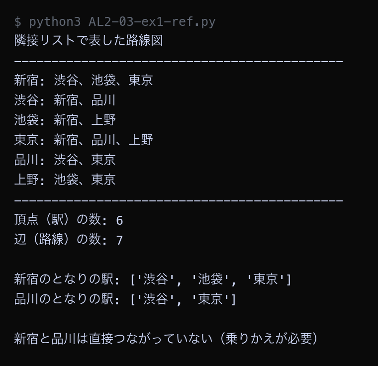

例題
例題1と例題2のコードを実行してください。まず作業フォルダを用意します。
VS Code でフォルダとファイルを用意する
Step 1: 作業フォルダを作る
- デスクトップに AL2 という名前のフォルダを作る（後期の授業ではずっと同じフォルダを使う）
- AL2 フォルダの中に No03 という名前のフォルダを作る
└── AL2/
├── No02/ ← 前回のファイル
└── No03/ ← 第3回はここに保存
Step 2: VS Code でフォルダを開く
- Visual Studio Code を起動する
- メニューから 「ファイル」→「フォルダーを開く」を選ぶ
- Step 1 で作った AL2/No03 フォルダを選んで開く
左側のエクスプローラーに No03 フォルダの中身が表示される（最初は空）。
Step 3: 例題ごとにファイルを作って実行する
- 左側エクスプローラーの No03 の横にある 新しいファイルアイコンをクリック
- ファイル名を入力して Enter（例題1なら
AL2-03-ex1.py） - 例題のコードブロック右上の コピーボタンをクリック
- VS Code の編集画面に 貼り付ける（Ctrl+V / Cmd+V）
- 保存する（Ctrl+S / Cmd+S）
- 右上の ▷（再生ボタン）をクリックして実行する
今回作るファイル（実践）: AL2-03-ex1.py, AL2-03-ex2.py。参考のコードを保存するときは、名前の最後に -ref を付ける
- 参考: コメントなしの完成したコード。まず読んで、全体の流れをつかむ
- 実践: アルゴリズムの要になる行が
____（穴）になっている。 丁寧なコメントと、コードの下の「ヒント」「候補」を見て、自分で埋めてから実行する
ファイル名は、参考が AL2-03-ex1-ref.py（ref = reference、参考）、
実践が AL2-03-ex1.py のように分けます（同じ名前にすると上書きされてしまうため）。
課題で使うのは実践のファイルです。
実行結果がページの画像と同じになれば正解です。ちがえば、どの穴がちがうかを考えて直します。
どうしても分からないときだけ、参考のコードと見比べてください。
今回のキーワード
| 用語 | 説明 |
|---|---|
| グラフ | 「点」と「点どうしのつながり」だけでものごとを表す方法。棒グラフや折れ線グラフとは別のもの。 |
| 頂点 | グラフの「点」。駅・人・迷路の1マスなどが頂点になる。ノード（node）とも呼ぶ。 |
| 辺 | グラフの「つながり」。路線・友達関係・となり合うマスの関係などが辺になる。 |
| 隣接リスト | 頂点ごとに、となりの頂点を並べた表し方。辺の数だけ場所を使うので、辺が少ないグラフに向く。 |
| 隣接行列 | たてよこの表を作り、つながっていれば1を書く表し方。「2点がつながっているか」を1回で調べられる。 |
隣接リストで路線図を表す
6つの駅と7本の路線からなる路線図を、隣接リストの形でPythonに書き写します。 隣接リストは辞書を使い、「駅の名前」を鍵、「となりの駅を並べたリスト」を値にします。
例題1（参考）── 完成したコード。コメントなしで全体の流れをつかむ。保存するなら AL2-03-ex1-ref.py の名前で
Python ── AL2-03-ex1-ref.py railway = { "新宿": ["渋谷", "池袋", "東京"], "渋谷": ["新宿", "品川"], "池袋": ["新宿", "上野"], "東京": ["新宿", "品川", "上野"], "品川": ["渋谷", "東京"], "上野": ["池袋", "東京"], } print("隣接リストで表した路線図") print("-" * 44) for station in railway: neighbors = railway[station] print(f"{station}: " + "、".join(neighbors)) print("-" * 44) vertex_count = len(railway) edge_count = 0 for station in railway: edge_count = edge_count + len(railway[station]) edge_count = edge_count // 2 print("頂点（駅）の数:", vertex_count) print("辺（路線）の数:", edge_count) print() print("新宿のとなりの駅:", railway["新宿"]) print("品川のとなりの駅:", railway["品川"]) print() if "品川" in railway["新宿"]: print("新宿と品川は直接つながっている") else: print("新宿と品川は直接つながっていない（乗りかえが必要）")
▶ 実行結果

6つの駅それぞれについて、となりの駅が一覧で表示されました。railway["新宿"] と書くだけで、新宿のとなりの駅3つがすぐ取り出せています。辺（路線）の数を数えるときに // 2 で半分にしているのは、1本の路線が「新宿の側」と「渋谷の側」の両方から数えられてしまうためです。
例題1（実践）── 参考と同じ方法を別のデータで。要の行が ____ になっているので、コメントを読みながら埋めて、AL2-03-ex1.py の名前で保存して実行する
Python ── AL2-03-ex1.py # グラフを「隣接リスト」で表す # 隣接リスト = それぞれの頂点について「となりにある頂点」を並べた表 # 6つの駅と、駅どうしをつなぐ路線をグラフにする # 頂点 = 駅、辺 = 路線 railway = { "横浜": ["川崎", "鶴見", "大森"], "川崎": ["横浜", "蒲田", "鶴見"], "鶴見": ["横浜", "目黒", "川崎"], "大森": ["横浜", "蒲田"], "蒲田": ["川崎", "大森"], "目黒": ["鶴見"], } print("隣接リストで表した路線図") print("-" * 44) for station in railway: neighbors = railway[station] print(f"{station}: " + "、".join(neighbors)) print("-" * 44) # 頂点の数と辺の数を数える vertex_count = len(railway) edge_count = 0 for station in railway: edge_count = ____ # ← 穴1 edge_count = ____ # ← 穴2 print("頂点（駅）の数:", vertex_count) print("辺（路線）の数:", edge_count) print() # となりの駅をすぐに取り出せることが、隣接リストの長所 print("横浜のとなりの駅:", railway["横浜"]) print("蒲田のとなりの駅:", railway["蒲田"]) print() # 「横浜と蒲田は直接つながっているか」を調べる if "蒲田" in railway["横浜"]: print("横浜と蒲田は直接つながっている") else: print("横浜と蒲田は直接つながっていない（乗りかえが必要）")
穴埋め（____ を埋めてから実行する）
| 穴 | ヒント | 候補（1つが正解） |
|---|---|---|
| 穴1 | その駅につながっている路線の本数を足す | A. len(railway)B. edge_count + len(railway[station])C. edge_count + 1 |
| 穴2 | 1本の路線は両方の駅から数えられるので、半分にする | A. edge_count // 2B. edge_countC. edge_count * 2 |
埋めたら保存して実行し、下の実行結果と同じになるか見比べる。ちがえば、どの穴がちがうかを考えて直す（上の「参考」のコードと見比べてもよい）。 答えは次回の授業の時刻に、ページのいちばん下の「解答例」に出ます。
▶ 実行結果
![AL2-03-ex1.py の実行結果。隣接リストで表した路線図 / -------------------------------------------- / 横浜: 川崎、鶴見、大森 / 川崎: 横浜、蒲田、鶴見 / 鶴見: 横浜、目黒、川崎 / 大森: 横浜、蒲田 / 蒲田: 川崎、大森 / 目黒: 鶴見 / -------------------------------------------- / 頂点（駅）の数: 6 / 辺（路線）の数: 7 / / 横浜のとなりの駅: ['川崎', '鶴見', '大森'] / 蒲田のとなりの駅: ['川崎', '大森'] / / 横浜と蒲田は直接つながっていない（乗りかえが必要）](images/a03_ex1_result.png)
埋めて実行した結果が、この画像と同じになれば正解です。ちがうときは、どの穴がちがうかを考えて直してください。
隣接行列で同じ路線図を表す
例題1とまったく同じ路線図を、今度は隣接行列の形で書き写します。 6つの駅があるので、たて6マス・よこ6マスの表を作ります。
例題2（参考）── 完成したコード。コメントなしで全体の流れをつかむ。保存するなら AL2-03-ex2-ref.py の名前で
Python ── AL2-03-ex2-ref.py stations = ["新宿", "渋谷", "池袋", "東京", "品川", "上野"] lines = [ ("新宿", "渋谷"), ("新宿", "池袋"), ("新宿", "東京"), ("渋谷", "品川"), ("東京", "品川"), ("東京", "上野"), ("池袋", "上野"), ] n = len(stations) matrix = [[0 for j in range(n)] for i in range(n)] for a, b in lines: i = stations.index(a) j = stations.index(b) matrix[i][j] = 1 matrix[j][i] = 1 print("駅の番号") for i in range(n): print(f" {i} = {stations[i]}") print() print("隣接行列（1 = つながっている、0 = つながっていない）") print("-" * 40) print(" " + "".join(f"{j:>4}" for j in range(n))) for i in range(n): row = "".join(f"{matrix[i][j]:>4}" for j in range(n)) print(f" {i} {stations[i]} " + row) print("-" * 40) print() a = "新宿" b = "品川" i = stations.index(a) j = stations.index(b) print(f"{a} と {b} はつながっているか → matrix[{i}][{j}] =", matrix[i][j]) a = "新宿" b = "東京" i = stations.index(a) j = stations.index(b) print(f"{a} と {b} はつながっているか → matrix[{i}][{j}] =", matrix[i][j]) print() matrix_cells = n * n list_cells = len(lines) * 2 print("隣接行列が使うマスの数:", matrix_cells, "マス（駅の数の2乗）") print("隣接リストが使うマスの数:", list_cells, "マス（路線の数の2倍）") print() print("駅の数を増やしたときの比較（1駅あたり3路線とした場合）") print("-" * 48) print(" 駅の数 隣接行列のマス数 隣接リストのマス数") for count in [6, 50, 500, 5000]: print(f"{count:>10} {count*count:>16} {count*3*2:>18}") print("-" * 48)
▶ 実行結果
![AL2-03-ex2-ref.py の実行結果。駅の番号 / 0 = 新宿 / 1 = 渋谷 / 2 = 池袋 / 3 = 東京 / 4 = 品川 / 5 = 上野 / / 隣接行列（1 = つながっている、0 = つながっていない） / ---------------------------------------- / 0 1 2 3 4 5 / 0 新宿 0 1 1 1 0 0 / 1 渋谷 1 0 0 0 1 0 / 2 池袋 1 0 0 0 0 1 / 3 東京 1 0 0 0 1 1 / 4 品川 0 1 0 1 0 0 / 5 上野 0 0 1 1 0 0 / ---------------------------------------- / / 新宿 と 品川 はつながっているか → matrix[0][4] = 0 / 新宿 と 東京 はつながっているか → matrix[0][3] = 1 / / 隣接行列が使うマスの数: 36 マス（駅の数の2乗） / 隣接リストが使うマスの数: 14 マス（路線の数の2倍） / / 駅の数を増やしたときの比較（1駅あたり3路線とした場合） / ------------------------------------------------ / 駅の数 隣接行列のマス数 隣接リストのマス数 / 6 36 36 / 50 2500 300 / 500 250000 3000 / 5000 25000000 30000 / ------------------------------------------------](images/a03_ex2-ref_result.png)
同じ路線図が、6×6＝36マスの表になりました。表のななめの線（自分自身との交点）はすべて0で、表は左上から右下の線を軸にして対称になっています。「新宿と東京はつながっているか」は matrix[0][3] を見るだけで分かります。一方で、駅の数が5000個になると、隣接行列は2500万マス、隣接リストは3万マスで、約800倍の差が出ています。
例題2（実践）── 参考と同じ方法を別のデータで。要の行が ____ になっているので、コメントを読みながら埋めて、AL2-03-ex2.py の名前で保存して実行する
Python ── AL2-03-ex2.py # 同じグラフを「隣接行列」で表して、隣接リストと比べる # 隣接行列 = 表（マス目）を作り、つながっていれば1、つながっていなければ0を書く stations = ["横浜", "川崎", "鶴見", "大森", "蒲田", "目黒"] # 路線（辺）の一覧 lines = [ ("横浜", "川崎"), ("横浜", "鶴見"), ("横浜", "大森"), ("川崎", "蒲田"), ("川崎", "鶴見"), ("大森", "蒲田"), ("鶴見", "目黒"), ] n = len(stations) # 全部のマスを0にした表を作る matrix = [[0 for j in range(n)] for i in range(n)] # 路線があるマスだけ1にする（行き帰りの両方を1にする） for a, b in lines: # index() は「リストの中で何番目にあるか」を返す。stations.index("川崎") なら 1 i = stations.index(a) j = stations.index(b) matrix[i][j] = 1 ____ # ← 穴1 # 表の見出しには、駅の名前ではなく番号を使う（そのほうが桁がそろって読みやすい） print("駅の番号") for i in range(n): print(f" {i} = {stations[i]}") print() print("隣接行列（1 = つながっている、0 = つながっていない）") print("-" * 40) print(" " + "".join(f"{j:>4}" for j in range(n))) for i in range(n): row = "".join(f"{matrix[i][j]:>4}" for j in range(n)) print(f" {i} {stations[i]} " + row) print("-" * 40) print() # 隣接行列は「つながっているか」を1回で調べられる a = "横浜" b = "蒲田" i = stations.index(a) j = stations.index(b) print(f"{a} と {b} はつながっているか → matrix[{i}][{j}] =", matrix[i][j]) a = "横浜" b = "大森" i = stations.index(a) j = stations.index(b) print(f"{a} と {b} はつながっているか → matrix[{i}][{j}] =", matrix[i][j]) print() # 使うマスの数を比べる matrix_cells = n * n list_cells = ____ # ← 穴2 print("隣接行列が使うマスの数:", matrix_cells, "マス（駅の数の2乗）") print("隣接リストが使うマスの数:", list_cells, "マス（路線の数の2倍）") print() print("駅の数を増やしたときの比較（1駅あたり3路線とした場合）") print("-" * 48) print(" 駅の数 隣接行列のマス数 隣接リストのマス数") for count in [6, 50, 500, 5000]: print(f"{count:>10} {count*count:>16} {count*3*2:>18}") print("-" * 48)
穴埋め（____ を埋めてから実行する）
| 穴 | ヒント | 候補（1つが正解） |
|---|---|---|
| 穴1 | 路線は両方向に通れるので、行と列を入れかえた場所にも1を書く | A. matrix[i][j] = 1B. matrix[j][i] = 1C. matrix[j][i] = 0 |
| 穴2 | 隣接リストのマスの数。1本の路線は両方の駅に書かれる | A. n * nB. len(lines)C. len(lines) * 2 |
埋めたら保存して実行し、下の実行結果と同じになるか見比べる。ちがえば、どの穴がちがうかを考えて直す（上の「参考」のコードと見比べてもよい）。 答えは次回の授業の時刻に、ページのいちばん下の「解答例」に出ます。
▶ 実行結果
![AL2-03-ex2.py の実行結果。駅の番号 / 0 = 横浜 / 1 = 川崎 / 2 = 鶴見 / 3 = 大森 / 4 = 蒲田 / 5 = 目黒 / / 隣接行列（1 = つながっている、0 = つながっていない） / ---------------------------------------- / 0 1 2 3 4 5 / 0 横浜 0 1 1 1 0 0 / 1 川崎 1 0 1 0 1 0 / 2 鶴見 1 1 0 0 0 1 / 3 大森 1 0 0 0 1 0 / 4 蒲田 0 1 0 1 0 0 / 5 目黒 0 0 1 0 0 0 / ---------------------------------------- / / 横浜 と 蒲田 はつながっているか → matrix[0][4] = 0 / 横浜 と 大森 はつながっているか → matrix[0][3] = 1 / / 隣接行列が使うマスの数: 36 マス（駅の数の2乗） / 隣接リストが使うマスの数: 14 マス（路線の数の2倍） / / 駅の数を増やしたときの比較（1駅あたり3路線とした場合） / ------------------------------------------------ / 駅の数 隣接行列のマス数 隣接リストのマス数 / 6 36 36 / 50 2500 300 / 500 250000 3000 / 5000 25000000 30000 / ------------------------------------------------](images/a03_ex2_result.png)
埋めて実行した結果が、この画像と同じになれば正解です。ちがうときは、どの穴がちがうかを考えて直してください。